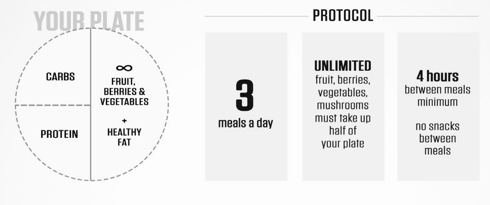

Low BMI
- "Heavy food items that are more in calories."
- "Frequent consumption of food items which are rich in nutrients, it could be snacks, shakes or juices, or proper meals."
- "Adding extra ingredients that are high in calories to regular diet, for example, including eggs and bananas in morning breakfast, etc., can help in increasing the weight."
- "Consume protein supplements along with adequate amount of vegetables and fruits."
- "Eating calorie dense food and maintaining a balanced diet will help in gaining the weight"
- "However, the diet shouldn’t be started drastically and instead, should be implemented gradually so that the body is accustomed with it."
These are quick health tips for the person suffering from underweight should include this in your diet plan:

| Meals | Time | What to have |
|---|---|---|
| Early Morning | 7 AM - 8 AM |
|
| Breakfast | 8 AM - 9 AM |
|
| After Breakfast | 11 AM - 12 PM |
|
| Lunch | 1:30 PM - 2:30 PM |
|
| Evening snack | 5:30 PM - 6:30 PM |
|
| Dinner | 8:30 PM - 9:30 PM |
|
| Before bed | 10:30 PM - 11:00 PM |
|
Diet For Normal BMI
| Vego Diet | Non-veg diet | Common for both | |
|---|---|---|---|
| Protein | Protein | Carbs | Healthy Fat |
|
|
|
|
Instructions
In this mealplan your every meal is built around fruit and vegetables. They should take up half of your plate every time you sit down to eat. Next you want to make sure you have enough protein with your meal. Add an item from the PROTEIN options list to your plate. For energy and good digestion add another item from the CARB list and one more from HEALTHY FATS. Mix and match items and keep your menu varied for optimal health and nutrition.
Fruit, berries, vegetables and mushrooms are completely unlimited but they have to be part of your meal as there is no in-between-meals snacking in this plan.
Measuring the amounts
You can have a go-to cup (a measuring cup or a cup that fits the volume of a measuring cup) at hand to help guide you. You don’t have to be precise with the amounts. Eventually you’ll be able to measure by just looking at your plate.
Diet For BMI > 23

Early-Morning
Indian gooseberries -3-4 (cooked) / Aloe Vera juice- 20 ml
Breakfast
Broken Wheat Porridge (Veg dalia) / Veg Semolina (veg upma) /oatmeal/ Veg Vermicelli (Sewian) / Stuffed Chapatti / Chapatti with veg or dal/Beetroot Juice / Pomegranate Juice
Mid-Morning
Fruit/ Green juice / Coconut water
Lunch
Plain chapatti / Multi grain chapatti / Boiled Brown Rice (Veg khichdi/ Vegetable + Dal + Salad
Evening
Herbal Tea / Red juice / Sprouts / Fox nuts/ Roasted chickpea/ Granola bar (Homemade)
Dinner
Plain chapatti / Boiled Rice / Khichdi / Dalia / Sabudanakhichdi/ Vegetable + Dal Salad